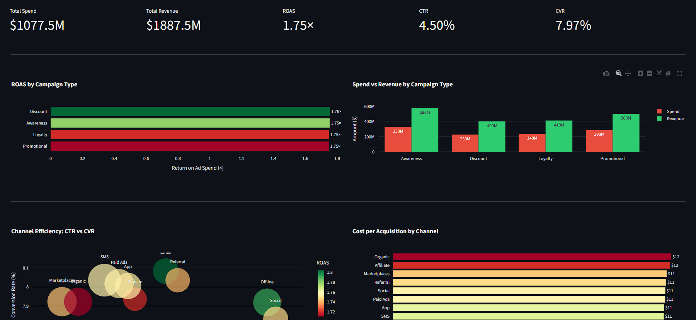
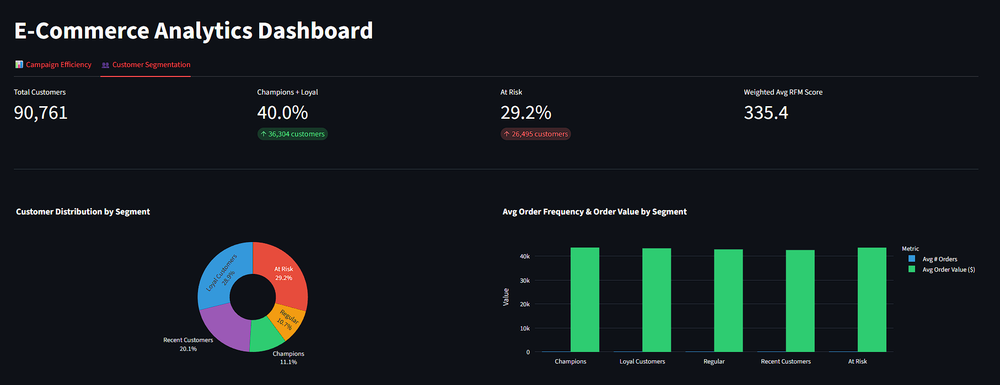

Interactive marketing and customer analytics dashboard backed by a Neon serverless PostgreSQL database.
Two-tab Streamlit app: campaign efficiency KPIs (ROAS, CTR, CVR, CPA) with interactive filters,
and RFM-based customer segmentation across 8,000+ customers.
Methodology
Designed a star schema in Neon PostgreSQL — fact tables for marketing spend and customer RFM scores, dimension tables for campaigns, channels, and customers
Queried and aggregated data with SQL via psycopg2; processed results with pandas and numpy
Built a two-tab Streamlit dashboard with multi-select filters and caching for performance
Visualized campaign ROAS, CTR vs CVR scatter, CPA by channel, and customer segment distribution using Plotly Express
Used Claude Code to accelerate schema design, query writing, and dashboard layout
Built With
Python
PostgreSQL
Neon
Streamlit
pandas
Plotly
Screenshots

Campaign efficiency tab — ROAS, CTR/CVR scatter, CPA by channel

Customer segmentation tab — RFM donut, frequency/value by segment, income mix
Results
Identified top-performing campaign types and channels by ROAS and CPA.
Segmented customers into Champions, Loyal, Regular, Recent, and At-Risk groups —
revealing income bracket composition per segment to guide targeting strategy.
 Python
Python
 PostgreSQL
PostgreSQL
 Neon
Neon
 Streamlit
Streamlit
 pandas
pandas
 Plotly
Plotly